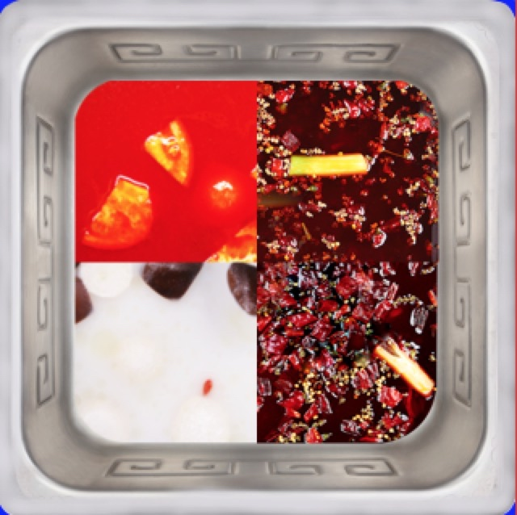
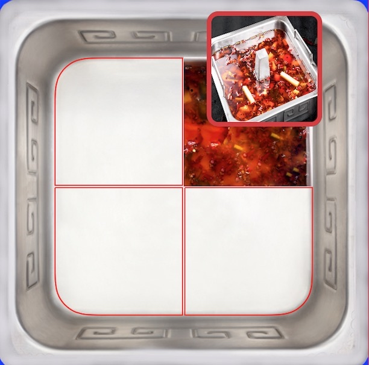
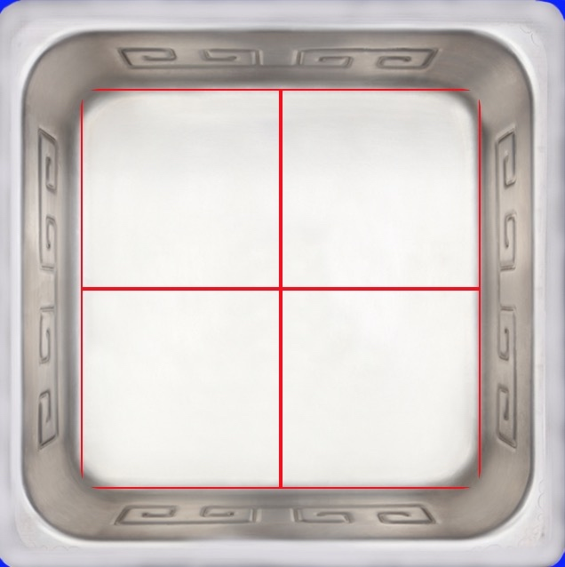
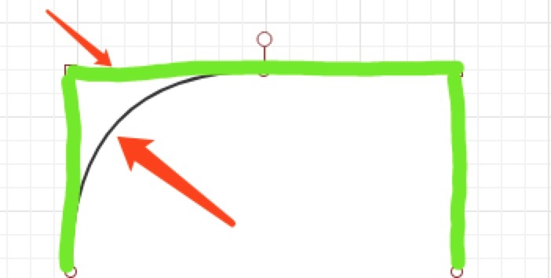
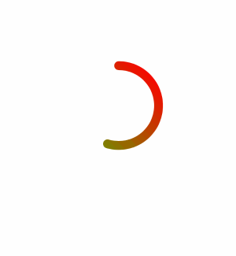
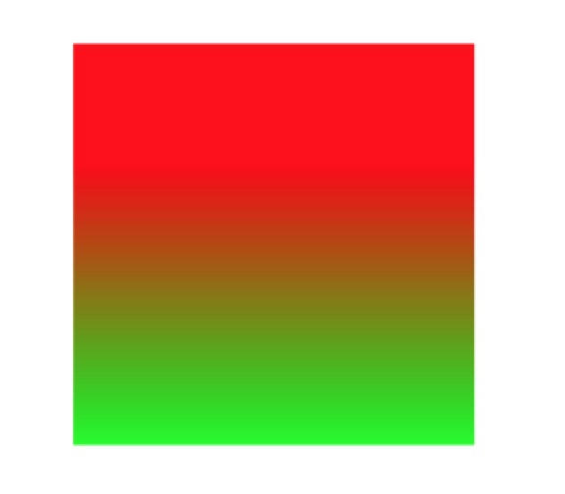
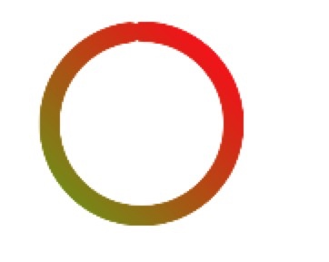

从切圆角引发的对iOS动画框架的探究
上周在开发的过程中,遇到了一个问题,就是如何只切割图片的单独一个圆角,而不是四个圆角,场景是用户在点火锅底料的时候,四宫格锅底是由四个锅拼成的,每个锅的图片都是不一样的,要拼接成一个完成的锅底,具体情况看图片,锅底的四张图片每一张都只有一个圆角.

方案一
其实这有一个非常简单的方法,就是把这四个UIImageView放到一个大的View中,把这个View切一个圆角,就ok了,一开始我就这这么做的,但是随后另一个问题摆在了我的面前.

就是用户在添加锅底的时候,当前为空的锅底需要显示为红色的线(像上文的图片那样),这次我再也不能投机取巧了.所以我觉得好好研究一下,第一步先从切圆角开始.
extension UIView {
func addRoundedCorners(withRect rect: CGRect,rectCorner: UIRectCorner,cornerRadii: CGSize){
let maskPath = UIBezierPath(roundedRect: rect, byRoundingCorners: rectCorner, cornerRadii: cornerRadii)
let maskLayer = CAShapeLayer()
maskLayer.frame = rect
maskLayer.path = maskPath.cgPath
self.layer.mask = maskLayer
}
}
非常好,调用这个方法后效果真的和第一张图一模一样,都只有一个圆角,下面开始下一步,就是在没有锅底的view中加入红线,我的想法是加上Border就可以了,so 我设置了一下border,结果是这个样子的

看似挺对的,但其实是有问题的,那就是每个圆角的位置 Border都没有作用,都消失了,这是因为什么我要解释一下.
首先要说一下mask这个CALayer的属性,查看API,会发现CALayer中的mask属性,也是CALayer类型的,官方的解释翻译过来意思就是layer中的可视区域,在看一下我上面的代码,创建了只有一个圆角的贝塞尔曲线,设置为layer的path,然后赋值给view的mask属性.然后在设置的是view的border,说到这,原因也就出来了,我画图解释一下.

绿色部分是layer.border,而里面的圆角是mask的layer,刚才说过了,可视区域是mask里面的部分,所以圆角的那部分border看不到了.(到现在我终于知道了 后来一看,好像说的不对)有同学可能会想,那把mask的border改宽不就行了吗?但经过我的测试是无效的,我认为是苹果做了特殊的设置,一个控制显示区域的layer如果还可以设置view.layer.masksToBounds = true这个属性是干嘛了borderWidth和borderColor的话就不对了.
所以就得自己画一个layer加上去了.
func addRoundCorneerBezierPath(rect: CGRect,roundCorneer: UIRectCorner,radii: CGSize){
let layer = CAShapeLayer()
layer.lineWidth = 1
layer.strokeColor = UIColor.red.cgColor
layer.fillColor = UIColor.clear.cgColor
let path = UIBezierPath(roundedRect: CGRect(x: 1, y: 1, width: rect.width-2, height: rect.height-2), byRoundingCorners: roundCorneer, cornerRadii: radii)
layer.path = path.cgPath
self.layer.addSublayer(layer)
}
CAShaperLayer是CALayer的子类.CAShapeLayer是一个图层,图层上你可以画各种东西,它的path属性就是它的路线,路线可以有很多方式来画,只不过我们选择用UIBezierPath来画而已,当然BezierPath值得研究的地方还有很多,这地就不一一细说了.CAShapeLayer也可以和CALayer一样设置frame或背景颜色,只不过一般我们用它来绘制图形.
既然已经说了这么多CA家族的东西,那就继续说一下CABasicAnimation动画和CAGradientLayer梯度图层.
转转转

下面做一个Demo,就是这种转转转,颜色渐变的效果.这种常见的效果在很多场景都有使用,比如蒙板,温度计,各种仪表都有使用.
首先创建一个圆环的CAShapeLayer
let view = UIView(frame: CGRect(x: 20, y: 20, width: 200, height: 200))
view.backgroundColor = UIColor.gray
self.view.addSubview(view)
let layer = CAShapeLayer()
layer.lineWidth = 10 //线宽
layer.strokeStart = 0//起始点
layer.strokeEnd = 0//结束点
layer.strokeColor = UIColor.white.cgColor
layer.fillColor = UIColor.clear.cgColor
let path1 = UIBezierPath(arcCenter: CGPoint(x: 100, y: 100), radius: 45, startAngle: 1.5*CGFloat.pi, endAngle: 3.46*CGFloat.pi, clockwise: true)
layer.path = path1.cgPath
layer.lineCap = "round" //线头样式
view.layer.addSublayer(layer)
然后,创建一个颜色渐变的CAGradientLayer的可视区域mask设置为上文的环形layer,因为CAShapeLayer没有能处理颜色渐变的办法,所以只能换个办法,用CAGradientLayer.CAGradientLayer的用法很简单,看到代码就会用了.它也继承自CALayer.
let gra = CAGradientLayer()
gra.backgroundColor = UIColor.gray.cgColor
gra.colors = [UIColor.red.cgColor,UIColor.green.cgColor]//渐变的颜色
gra.locations = [0.3,1]//颜色变化的百分比
gra.frame = CGRect(x: 0, y: 0, width: 200, height: 200)
gra.position = self.view.center
gra.startPoint = CGPoint(x: 1, y: 0)//颜色开始的位置
gra.endPoint = CGPoint(x: 1, y: 1)//颜色结束的位置
gra.mask = layer// 通过mask属性来截取渐变层
self.view.layer.addSublayer(gra)

效果是这样的,当你把gra.mask设置为上文的环形layer的时候.

OK了,最后就是让它动起来了.想要动起来需要用到CABasicAnimation这个类,来控制layer.strokeStart = 0//起始点 layer.strokeEnd = 0//结束点,简单来说这个动画可以分为两部分,第一分部,layer.strokeEnd的值从零到1,第二部分,layer.strokeStart的值从0到1.然后循环代用就👌了
var an : CABasicAnimation!
an = CABasicAnimation(keyPath: "strokeEnd")
an.duration = 1
an.fromValue = 0
an.toValue = 1
an.delegate = self//设置代理在第一部分的动画结束的时候,开始第二部分的动画.
an.isRemovedOnCompletion = false
an.fillMode = kCAFillModeForwards
// an.timingFunction = CAMediaTimingFunction(name: kCAMediaTimingFunctionEaseIn)
an.timingFunction = CAMediaTimingFunction(controlPoints: 0.17, 0.76, 0.71, 0.15)
self.layer.add(an, forKey: "com.CABasicAnimation1")
在CABasicAnimation中有三个属性,需要说明一下,第一个就是an.isRemovedOnCompletion = false,这属性的意思是在动画结束后是回到动画之前的layer还是保持动画之后的layer,第二个是an.fillMode = kCAFillModeForwards,这个属性只有在上一个属性是false的时候才会有效果.这些属性有什么不同,这边博客有详细的说明,以下说明是复制他文章中提到的.
fillMode：决定当前对象在非active时间段的行为.比如动画开始之前,动画结束之后
kCAFillModeRemoved 这个是默认值,也就是说当动画开始前和动画结束后,动画对layer都没有影响,动画结束后,layer会恢复到之前的状态（可以理解为动画执行完成后移除）kCAFillModeForwards 当动画结束后,layer会一直保持着动画最后的状态
kCAFillModeBackwards 当在动画开始前,你只要把layer加入到一个动画中,layer便立即进入动画的初始状态并等待动画开始.你可以这样设定测试代码,延迟3秒让动画开始,只要动画被加入了layer,layer便处于动画初始状态
第三个属性 an.timingFunction = CAMediaTimingFunction(name: kCAMediaTimingFunctionEaseIn),是动画持续这段时间的状态,苹果提供了几个简单的,先快后慢等,如果觉得不满意,可以自己写一个贝塞尔曲线去,类似于这种an.timingFunction = CAMediaTimingFunction(controlPoints: 0.17, 0.76, 0.71, 0.15)当然至于为什么贝塞尔曲线可以干这么多事,你可以去复习一下高中数学,顺便把导数,极限,微积分什么的都看看,充分体现了为什么数学学的好的人,代码写的好了.
extension ViewController : CAAnimationDelegate{
public func animationDidStop(_ anim: CAAnimation, finished flag: Bool){
if let aa = self.layer.animation(forKey: "asd"),anim == aa{
self.addFill12()//第二部分动画
}else{
layer.removeAllAnimations()//注意在下一次动画开始的时候要移除之前的动画
self.btnClick(1)//第一部分动画
}
}
}
var an1 : CABasicAnimation!
func addFill12() {
an1 = CABasicAnimation(keyPath: "strokeStart")
an1.duration = 1
an1.fromValue = 0
an1.toValue = 1
an1.delegate = self
an1.isRemovedOnCompletion = false
an1.fillMode = kCAFillModeForwards
an1.timingFunction = CAMediaTimingFunction(name: kCAMediaTimingFunctionEaseIn)
self.layer.add(an1, forKey: "com.CABasicAnimation2")
}
总结
这篇博客只是说了一些简单的动画是如何实现的,如果从实现的角度来讲,我觉得没有什么难度,个人感觉真正难的地方在于复杂动画时,对于各种动画路线,函数,效果的计算,对于我这种高中数学忘的差不多的人来说,确实是个挑战.如果有机会,下一篇微博我会亲自试一试复杂动画的实现,看一看自己的数学功底.
Demo